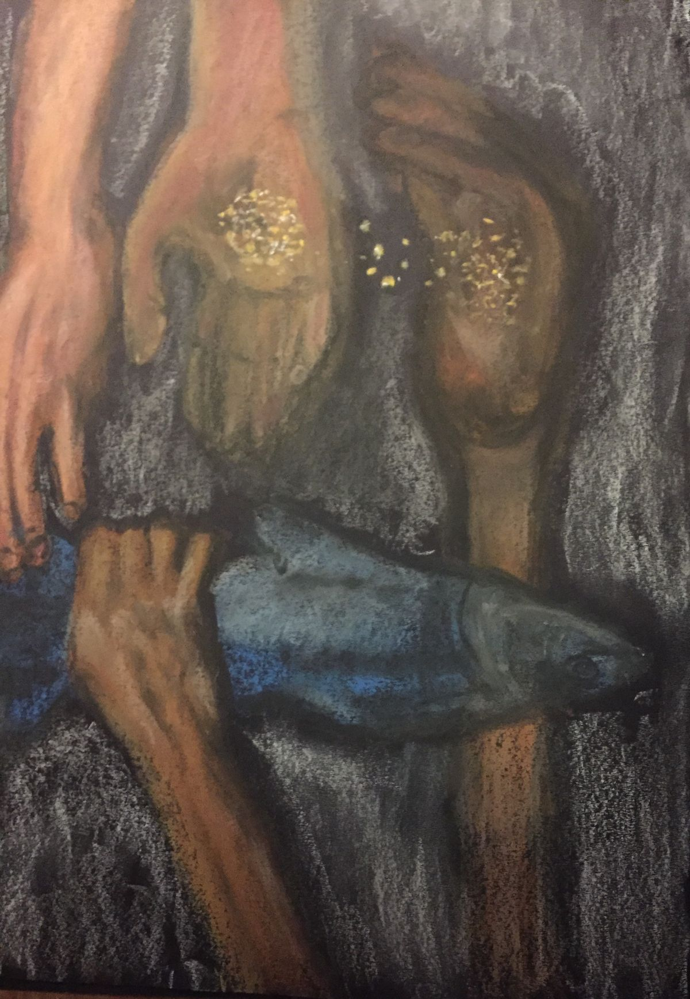
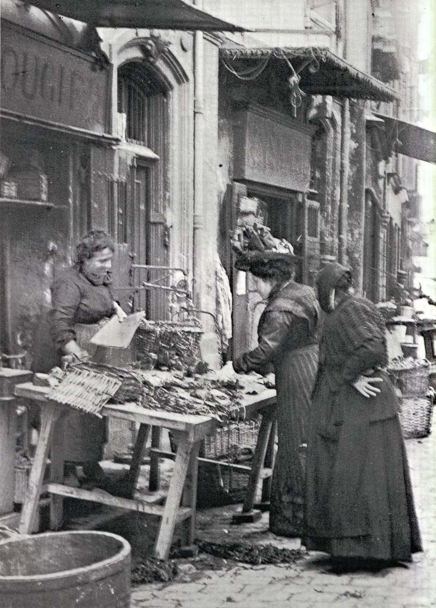
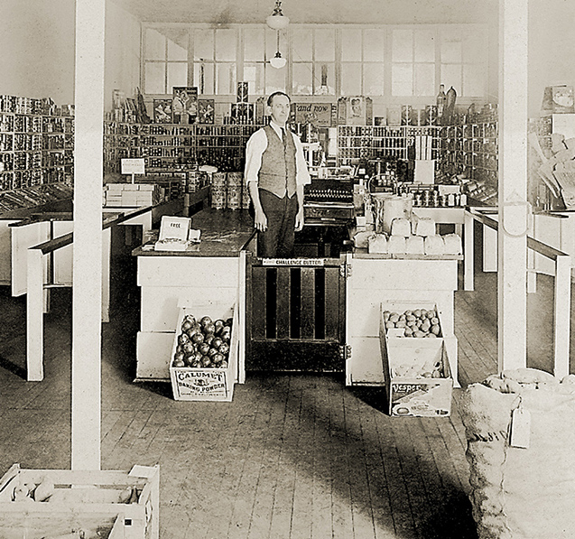
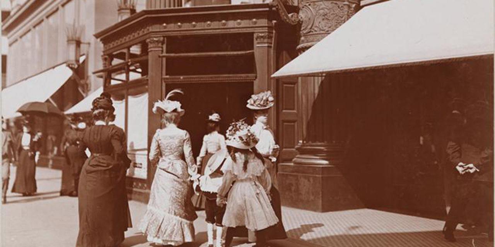
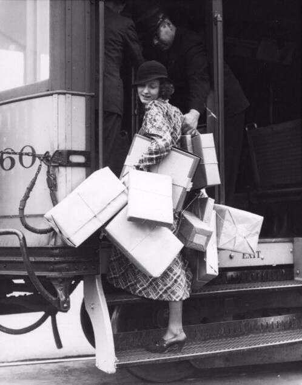
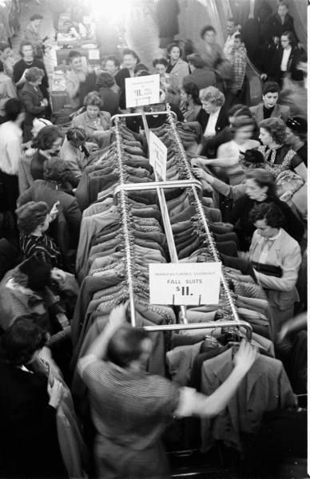
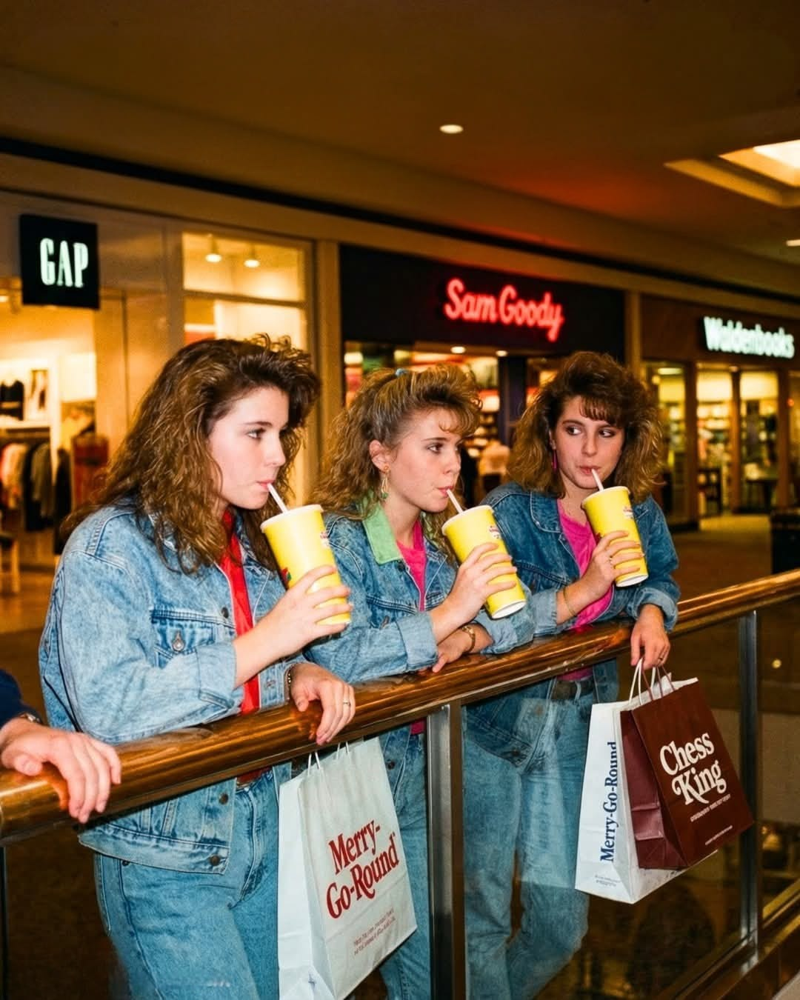
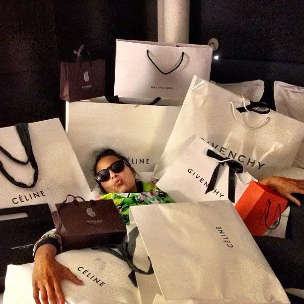
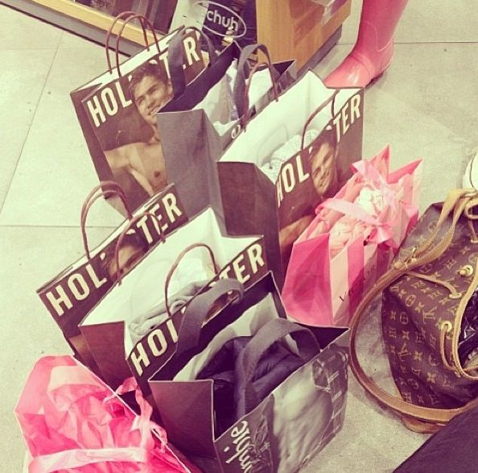
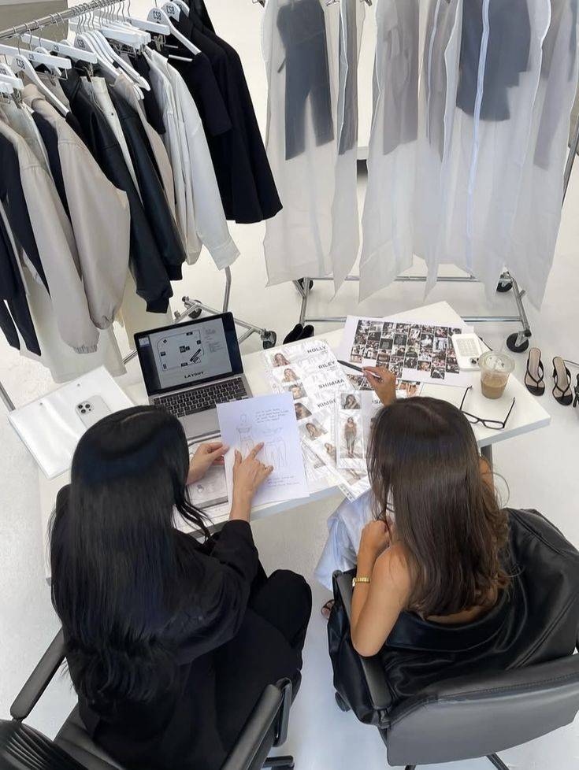

Oudheid (± 3000 v.Chr.)
Ruilhandel

Ruilhandel is een manier van handelen waarbij mensen spullen of diensten direct met elkaar ruilen, zonder geld te gebruiken.
Je geeft iets wat jij hebt.
In ruil krijg je iets wat je nodig hebt
Het werkte alleen goed als beide mensen iets wilden van elkaar
1000 (Middeleeuwen)
Markten

Rond het jaar 1000 (Middeleeuwen) werd er vooral gehandeld op lokale markten.
Mensen kochten bij ambachtslieden (zoals bakkers en smeden)
Er was weinig keuze en alles was lokaal.
Shoppen was vooral noodzakelijk, niet voor plezier.
1700
Keuzen

Rond 1700 begon shoppen langzaam te veranderen van puur noodzakelijk naar ook iets sociaal en modieus.
De meeste mensen kochten spullen op markten of bij kleine ambachtswinkels.
Producten werden vaak met de hand gemaakt.
Rijke burgers en adel kochten luxeproducten uit andere landen.
1850
Industrialisatie

In de periode rond 1850 veranderde shoppen sterk door de industriële revolutie.
Fabrieken maakten producten sneller en goedkoper.
Meer mensen konden kleding, meubels en luxeproducten kopen.
Steden groeiden snel, waardoor er meer winkels kwamen.
1950
Massaconsumptie

Rond 1950 veranderde shoppen enorm door de groeiende economie na de Tweede Wereldoorlog.
Mensen kregen meer geld om uit te geven.
Fabrieken produceerden grote hoeveelheden goedkope producten.
Winkelen werd onderdeel van het dagelijks leven.
1970
Consumentencultuur

Rond 1970 werd shoppen moderner en sterker beïnvloed door mode, reclame en populaire cultuur.
Grote winkelketens groeiden snel.
Shoppingcentra werden populaire ontmoetingsplaatsen.
Mensen kregen meer keuze dan ooit tevoren.
1985
Merkenrevolutie

Rond 1985 werd shoppen sneller, internationaler en sterker gericht op merken en trends.
Grote ketens en shoppingcentra werden heel populair.
Mensen kregen meer koopkracht.
Merkkleding en technologie werden belangrijker.
1995
Internetopkomst

Rond 1995 begon shoppen sterk te veranderen door de opkomst van het internet en nieuwe technologie.
Grote winkelketens bleven groeien.
Mensen kregen toegang tot de eerste online winkels.
Internationale merken werden overal populair.
2010
Digitalisering

Rond 2010 veranderde shoppen enorm door smartphones, sociale media en snelle online levering.
Online shoppen werd heel normaal.
Mensen begonnen vaker via hun telefoon te kopen.
Fysieke winkels kregen concurrentie van webshops.
2025
Hyperpersonalisatie

Rond 2025 is shoppen sterk digitaal, persoonlijk en snel geworden.
Online en fysieke winkels werken steeds meer samen.
Kunstmatige intelligentie helpt mensen producten kiezen.
Veel mensen shoppen via apps en sociale media.